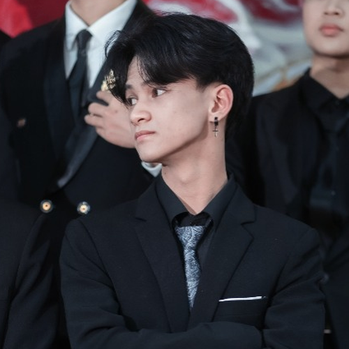

Sinh viên khoa học dữ liệu — nghiên cứu ứng dụng AI, kỹ thuật dữ liệu và xây dựng tư duy phân tích trong kỷ nguyên trí tuệ nhân tạo.

Tôi là Đỗ Văn Thái, sinh viên năm nhất chuyên ngành Khoa học Dữ liệu (K70A-DS2) tại Trường Đại học Công nghệ, ĐHQGHN — một trong những ngôi trường công nghệ hàng đầu Việt Nam. Với mục tiêu phấn đấu trở thành một Data Engineer trong tương lai. Việc học và làm việc với các hệ thống dữ liệu thường đòi hỏi tư duy logic, sự tỉ mỉ và tập trung cao độ. Chính vì thế, để cân bằng lại nhịp sống và nuôi dưỡng sự sáng tạo, tôi có niềm đam mê đặc biệt với việc đọc sách và nghe nhạc. Sách giúp tôi không ngừng mở rộng góc nhìn, còn âm nhạc là cách tuyệt vời nhất để tôi tái tạo năng lượng sau những giờ xử lý thuật toán căng thẳng.
Ngoài học tập, tôi quan tâm đến công nghệ mã nguồn mở, thiết kế giao diện số và các vấn đề đạo đức trong phát triển AI — những lĩnh vực ngày càng quan trọng trong kỷ nguyên dữ liệu bùng nổ.
Thực hành quản lý cấu trúc thư mục đa cấp PascalCase, quản lý vòng đời tệp tin và quy tắc đặt tên tệp tin chuẩn hóa trên Windows.
Chiến lược xây dựng chuỗi toán tử tìm kiếm nâng cao (Boolean) và thiết lập ma trận đánh giá độ tin cậy của tài liệu nghiên cứu.
Thiết kế và thử nghiệm hiệu năng viết prompt kỹ thuật (Role + CoT + Few-shot) phục vụ giải nghĩa lập trình C++ và Triết học.
Vận hành không gian cộng tác nhóm thông qua Trello Kanban, Google Workspace và Webhooks phục vụ dự án khảo sát sinh viên.
Thiết kế bộ Infographic Net Zero 2050 kết hợp Claude 3.5 (văn bản), DALL-E 3 (minh họa) và phân tích đóng góp sáng tạo cá nhân.
Phân tích khoảng trống chính sách đào tạo đối với Generative AI và xây dựng bộ 6 nguyên tắc liêm chính học thuật cá nhân.
Kỹ năng được rèn luyện qua thực hành trực tiếp trong các bài tập học phần, phản ánh năng lực thực tế chứ không chỉ lý thuyết.
AI chỉ đóng vai trò gợi ý và kiểm tra — không được dùng để làm thay từ đầu. Giá trị thật nằm ở quá trình tư duy của người học.
Ghi rõ tên công cụ, ngày truy cập và prompt đã dùng. Minh bạch là biểu hiện của trung thực với giảng viên và với chính mình.
Đối chiếu với tài liệu gốc và nguồn uy tín. Một sai lầm nhỏ trong lý thuyết kỹ thuật có thể dẫn đến hiểu sai toàn bộ khái niệm.
Tuyệt đối tuân thủ quy định từng môn. Gian lận bằng AI không khác gian lận truyền thống — hậu quả với bản thân còn nghiêm trọng hơn điểm số.
Không sao chép nguyên văn đầu ra AI. Quá trình viết lại chính là quá trình kiểm tra xem mình có thực sự hiểu hay chưa.
Dùng AI để nâng cao năng lực, không phải để thay thế năng lực. Điểm cao mà không hiểu gì sẽ thất bại trong công việc thực tế.
Hành trình xây dựng Portfolio này là một trong những trải nghiệm học tập có chiều sâu nhất tôi có được trong năm học đầu tiên tại UET. Khác với các bài tập học phần đơn lẻ chỉ tập trung vào kiểm tra lý thuyết, portfolio yêu cầu tôi không chỉ làm đúng mà còn phải liên tục tự phản biện để hiểu rõ bản chất của từng thao tác và hệ thống hóa lại toàn bộ kỹ năng số của bản thân.
Điều tôi cảm nhận rõ nhất là sự liên kết mang tính hệ thống giữa các bài tập thực hành. Việc quản lý tệp tin PascalCase ở Bài 1 tưởng chừng như đơn giản nhưng lại là nền tảng trực tiếp giúp tôi thiết lập không gian cộng tác nhóm khoa học trên Trello và Google Drive ở Bài 4. Tương tự, kỹ năng tìm kiếm học thuật nâng cao ở Bài 2 chính là bệ phóng giúp tôi có đủ dữ liệu kiểm chứng và viết prompt hiệu quả cho LLM ở Bài 3, từ đó sáng tạo sản phẩm Infographic ở Bài 5 một cách bài bản.
Đặc biệt, Bài tập 6 về đạo đức và liêm chính học thuật đã giúp tôi định hình một tư duy hoàn toàn mới về mối quan hệ giữa con người và trí tuệ nhân tạo. Trong kỷ nguyên AI tạo sinh, năng lực của một sinh viên khoa học dữ liệu không chỉ đo bằng việc viết code nhanh hay truy vấn giỏi, mà nằm ở khả năng đặt câu hỏi thông minh, tư duy kiểm chứng độc lập và ý thức trách nhiệm đạo đức trước mỗi dòng lệnh được chạy.
Tóm lại, portfolio này không chỉ là một trang web lưu trữ sản phẩm, mà là tấm gương phản chiếu sự trưởng thành trong tư duy học thuật và phong cách làm việc chuyên nghiệp của tôi — một bước đệm vững chắc cho chặng đường nghiên cứu chuyên sâu về khoa học dữ liệu phía trước.